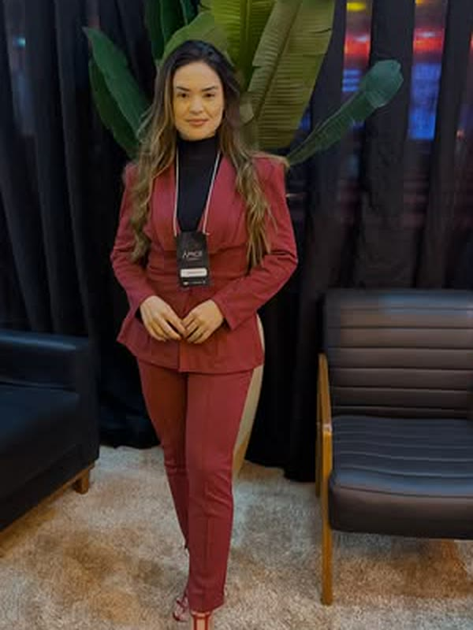

Tudo passa por você
Nenhuma petição sai, nenhum cliente é respondido e nenhuma decisão anda sem a sua assinatura. Você virou o funil por onde o escritório inteiro precisa caber.
Mentoria para advogadas
Para a advogada que virou o gargalo do próprio escritório. Delegação, processos e uma equipe que decide sem esperar por você.
Se você chegou até aqui, provavelmente já viveu uma destas três situações.
Nenhuma petição sai, nenhum cliente é respondido e nenhuma decisão anda sem a sua assinatura. Você virou o funil por onde o escritório inteiro precisa caber.
Você contratou gente boa, mas ninguém decide sozinho. Toda dúvida volta para a sua mesa, e delegar acaba dando mais trabalho do que fazer.
O volume de casos subiu, a sua agenda encheu, e mesmo assim o mês seguinte continua sendo uma incógnita. Crescer virou sinônimo de trabalhar mais.
“Quando tudo depende de você, o problema não é falta de tempo, é falta de autonomia na equipe.” Dra. Tarine Costa
Não é motivação nem produtividade pessoal. É estrutura: o que precisa existir para o escritório crescer sem depender de uma única pessoa.
Sair do lugar de quem revisa tudo e entrar no lugar de quem define o padrão. Delegar não é passar tarefa, é transferir critério de decisão junto.
O que hoje só existe na sua cabeça vira rotina escrita: como o cliente entra, como o caso anda, o que acontece em cada etapa. Processo é o que faz o resultado se repetir.
Com padrão definido e rotina no lugar, a equipe passa a decidir sem esperar. É aí que o escritório para de travar toda vez que você sai da sala.

Quem conduz a mentoria
Tarine Costa começou do zero, sem sócio, sem escritório herdado e sem atalho. O que ela tinha era uma convicção: trabalhador rural merece advocacia de qualidade, mesmo a quilômetros de distância de um grande centro.
Ao longo de mais de dez anos em Porteirinha, Minas Gerais, transformou essa convicção em um escritório conceituado, com equipe e rotina próprias. A mentoria nasceu do caminho que ela percorreu para sair de advogada que faz tudo e chegar em advogada que dirige.
“Poder ter esse contato diário com quem de fato vive a advocacia nos traz coragem, leveza, segurança e disciplina.” Trecho do depoimento de uma advogada mentorada
Mensagens recebidas por WhatsApp, reproduzidas palavra por palavra.
“Dra. Tarine é aquela fortaleza e simplicidade na qual nos inspiramos, ela sempre está em movimento e com ela pra tudo tem um jeito. Aprender com ela esses princípios me fez desenvolver uma outra percepção de advocacia, encontrar soluções estratégicas, e superar o medo e a insegurança na atuação, ela nos mostra diariamente que nós só vamos conseguir bons resultados quando superamos aquilo que nos limita e isso só se faz praticando. Poder ter esse contato diário com quem de fato vive a advocacia nos traz coragem, leveza, segurança e disciplina em nossa nossa profissão. Sou muito grata por todo ensinamento e aprendizado.”
Advogada mentorada
“Nunca tinha atuado no previdenciário, até precisar fazer as primeiras audiências. Os primeiros passos na advocacia foram dados com o apoio de Dra. Tarine. O fato é que, quando se tem um norte seguro, a atuação também se sustenta.
Livia Andrade · advogada
Há mentorias que tem preço; outras, valor.
Minha eterna gratidão à Dra. Tarine por tudo!”
“Sempre me senti insegura para atuar em audiências, principalmente nas de instrução. Com a paciência, dedicação e ensinamentos da Dra. Tarine, ganhei mais confiança e segurança para enfrentar esses momentos. Também admiro muito sua visão estratégica nos casos, que nos ajuda a encontrar o melhor caminho para alcançar os objetivos dos clientes. Sou muito grata por todo o aprendizado e apoio.”
Isabella Cangussu · advogada
A conversa inicial existe justamente para isso. Mas dá para adiantar boa parte aqui.
Sem formulário longo e sem funil. Começa por uma conversa.
Conta em poucas linhas como o escritório está hoje: quantas pessoas, quais áreas e o que mais trava a sua semana.
Uma conversa para entender em que ponto o escritório está e se a mentoria faz sentido para o seu momento. Se não fizer, ela vai dizer.
Formato, duração e investimento saem do diagnóstico, porque escritório de duas pessoas e escritório de dez não têm o mesmo caminho.
O investimento é definido depois da conversa de diagnóstico, porque depende do tamanho do escritório e da profundidade do acompanhamento. Na própria conversa você recebe o valor, sem precisar entrar em nenhuma lista.
Não. A experiência da Dra. Tarine vem do previdenciário rural, mas o que a mentoria trata é gestão de escritório: delegação, processos e rotina de equipe. Isso independe da área em que você atua.
Precisa ter pelo menos alguém além de você, nem que seja um estagiário ou uma secretária. O trabalho é sobre transferir critério de decisão, e isso pressupõe alguém para quem transferir.
A Dra. Tarine atende advogadas de fora de Minas, então o acompanhamento acontece a distância. O formato exato é combinado no diagnóstico.
Não existe prazo honesto para isso, porque depende do que já existe no seu escritório e do quanto você consegue mudar da própria rotina. O que dá para dizer é que processo escrito e critério definido começam a aparecer nas primeiras semanas.
Uma conversa para entender onde ele trava. Se a mentoria não for para o seu momento, você vai ouvir isso na hora.
Dra. Tarine Costa · OAB/MG 169.455
Porteirinha, Minas Gerais · advocaciatarine@gmail.com